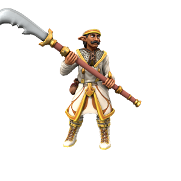
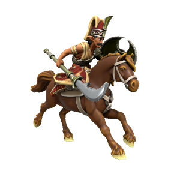
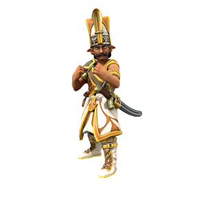

Military
Unlike other monarchies, the Kasharite military is not regional and all troops are loyal directly to the Sultan, not to regional governors. The army is commanded by Pashas, high ranking generals who each control a unit of mixed troops.
The troops themselves fall into three groups:
Piyad

Basic infantry unit, comprising the bulk of the Kasharite army. Primarily use a bladed spear called a fauchard, but carry a dagger for close combat.
Hussar

Mounted cavalry unit, forms the front guard in military combat. Uses a reinforced fauchard from horseback, also carries a crescent shield. Excellent for hitting fast and hard right away, but their usefulness tapers off in long battles.
Janissary

Elite fighers, the jewel of the Kashar military. These highly trained, disciplined veterans are feared and respected across the sub-Spessartine region. While their numbers are small, their high level of skill makes them a formidable force.
🡐 Kashar